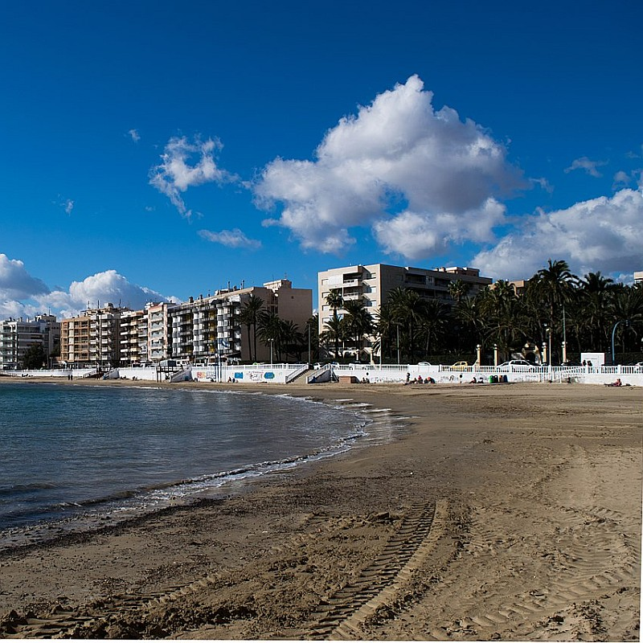
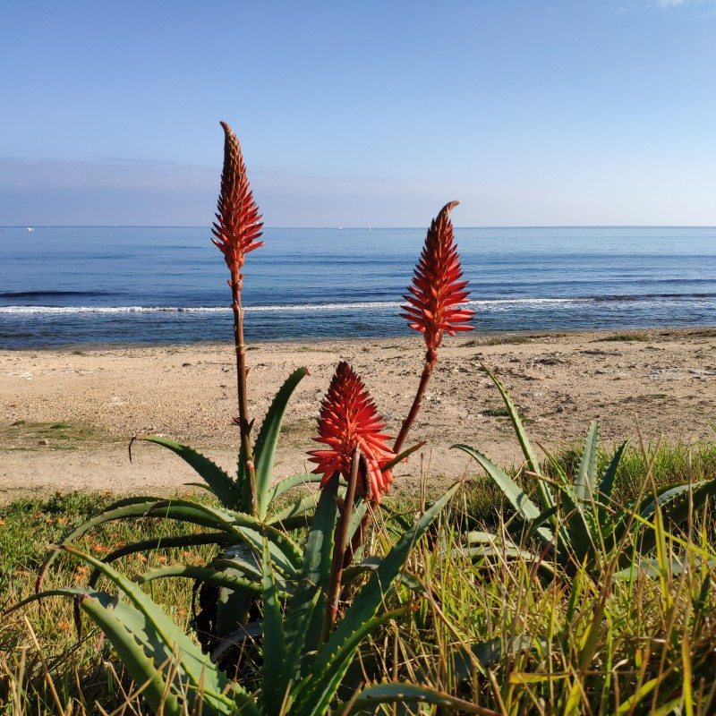

Playa de la Mata
Playa de la Mata ist mit 2363 m Länge und 47 m Breite der größte Strand von Torrevieja. Es gibt acht Volleyballfelder, einen Fußballplatz, Wassertreter und in der Sommersaison ein gutes Dutzend Strandbars.
Playa de la Mata ist mit 2363 m Länge und 47 m Breite der größte Strand von Torrevieja. Es gibt acht Volleyballfelder, einen Fußballplatz, Wassertreter und in der Sommersaison ein gutes Dutzend Strandbars.


Playa de los Locos
Der Sandstrand der Verrückten (locos) verdankt seinem Namen einem ehemaligen nahegelegenen Krankenhaus. Er grenzt an den Strand Playa la Cura, ist 760 m lang und 27 m breit. In seiner Nähe gibt es viele Parkplätze, Restaurants und Bars. Daher kann es hier sehr voll werden.
Der Sandstrand der Verrückten (locos) verdankt seinem Namen einem ehemaligen nahegelegenen Krankenhaus. Er grenzt an den Strand Playa la Cura, ist 760 m lang und 27 m breit. In seiner Nähe gibt es viele Parkplätze, Restaurants und Bars. Daher kann es hier sehr voll werden.


Playa del Cura
Playa del Cura ist der beste von allen Stränden, mit 375 m Länge und 27 m Breite kleiner als Los Locos und auch oft recht voll.
Playa del Cura ist der beste von allen Stränden, mit 375 m Länge und 27 m Breite kleiner als Los Locos und auch oft recht voll.
_-_panoramio.jpg")

Playa del Acequion
Playa del Acequion ist die Verlängerung des Strandes Playa de los Náufragos in nordöstlicher Richtung des Salzufers, unweit des Hafens.
Playa del Acequion ist die Verlängerung des Strandes Playa de los Náufragos in nordöstlicher Richtung des Salzufers, unweit des Hafens.


Playa de los Náufragos
Playa de los Náufragos, an Anlegestelle und Hafen gelegen, ist ein weiterer beliebter und stadtnaher Sandstrand, von dem aus man das Zentrum von Torrevieja gut erreichen kann. Deshalb ist er leider überfüllt. Er ist 325 m lang und 77 m breit. Er trägt die Blaue Flagge, bietet dank der Palmen schattige Plätze sowie ein kleines Spaßbad für Kinder.
Playa de los Náufragos, an Anlegestelle und Hafen gelegen, ist ein weiterer beliebter und stadtnaher Sandstrand, von dem aus man das Zentrum von Torrevieja gut erreichen kann. Deshalb ist er leider überfüllt. Er ist 325 m lang und 77 m breit. Er trägt die Blaue Flagge, bietet dank der Palmen schattige Plätze sowie ein kleines Spaßbad für Kinder.


Von Náufragos nach Cala Piteras
Diese etwas über 2 Kilometer kann man schön am Strand spazieren über teils sandige, kiesige, steinige und Gras-Abschnitte. Am Küstenabschnitt unweit der Wohnung gelangt man bequem über eine Leiter zum Meer, in dem man herrlich schnorcheln und Fische bewundern kann. Auf dem Rasen hier laden Liegen zum Sonnen ein.
Diese etwas über 2 Kilometer kann man schön am Strand spazieren über teils sandige, kiesige, steinige und Gras-Abschnitte. Am Küstenabschnitt unweit der Wohnung gelangt man bequem über eine Leiter zum Meer, in dem man herrlich schnorcheln und Fische bewundern kann. Auf dem Rasen hier laden Liegen zum Sonnen ein.


Playa Cala Ferris
An der südlichen Stadtgrenze von Torrevieja liegt dieser weniger bekannte, aber durch seine Palmen, kleine Dünen und sein kristallklares Wasser sehr schöne Strand. Wenn die Sonne auf- und untergeht, kann man hier sogar die Papageien schreien hören. Der Strand ist ideal zum Schwimmen, Schnorcheln und Fische beobachten.
An der südlichen Stadtgrenze von Torrevieja liegt dieser weniger bekannte, aber durch seine Palmen, kleine Dünen und sein kristallklares Wasser sehr schöne Strand. Wenn die Sonne auf- und untergeht, kann man hier sogar die Papageien schreien hören. Der Strand ist ideal zum Schwimmen, Schnorcheln und Fische beobachten.

Cala Piteras
Klein aber fein. 123 m lang und 15 m breit, hervorragend zum Baden und Schnorcheln geeignet. Cala Piteras hat eine beeindruckende Unterwasserwiese mit Neptungras, die im salzigen Wasser einen wichtigen Teil des Ökosystems darstellt. Dass Neptungras hier so gut gedeiht, spricht für die hohe Wasserqualität.
Klein aber fein. 123 m lang und 15 m breit, hervorragend zum Baden und Schnorcheln geeignet. Cala Piteras hat eine beeindruckende Unterwasserwiese mit Neptungras, die im salzigen Wasser einen wichtigen Teil des Ökosystems darstellt. Dass Neptungras hier so gut gedeiht, spricht für die hohe Wasserqualität.